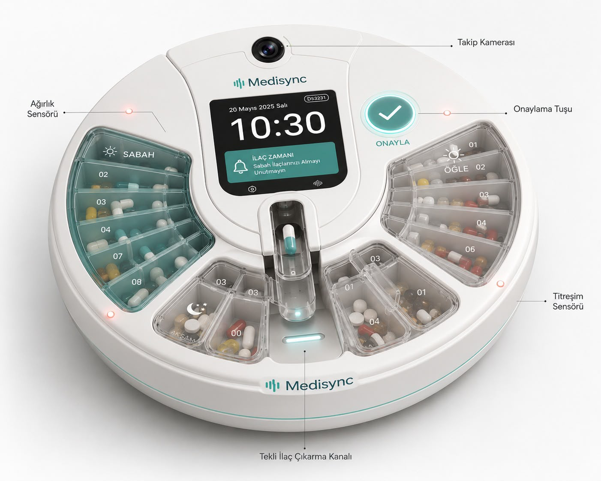

Bilişsel yükü sıfıra indiren yaşlı dostu arayüzü, otonom dönen kapak mekanizması ve kesintisiz senkronizasyon altyapısı ile evde bakım süreçlerinde yeni bir dönem başlıyor.

Mühendislik ekibimiz tarafından geliştirilen otonom mekanik sistemler
İlaç saati geldiğinde motor sürücüler yardımıyla otomatik dönen hazne, sadece ilgili ilacın kapağını açarak yanlış ilaç kullanım riskini sıfıra indirir.
Kronik hastalar ve yaşlı bireyler için yüksek desbelli sesli ikaz ve yanıp sönen yeşil LED'ler ile ilaç saatleri asla gözden kaçmaz.
Wi-Fi altyapısı sayesinde cihaz, alınan veya atlanan tüm doz verilerini anlık olarak bulut veritabanına işler.
Ömrüm Hanım mentorluğunda yürütülen bilimsel kullanıcı deneyimi analizleri
Kullanıcıların cihazı ve arayüzü kullanırken geçirdiği zihinsel süreçler EEG cihazlarıyla ölçülmüş, odaklanma ve stres seviyeleri minimuma indirilmiştir.
Göz takip sistemleri kullanılarak yaşlı bireylerin ekranda ilk baktığı noktalar tespit edilmiş, buton büyüklükleri ve yerleşimleri bu testlere göre optimize edilmiştir.
Dijital okuryazarlığı düşük yaşlı bireyler ve aileleri için tasarlandı
Karmaşık menüler, kafa karıştıran butonlar yok. Yaşlı dostu büyük puntolar ve rehber yönlendirmelerle minimum eforla maksimum kullanım.
Hastanız ilacını içmediğinde veya unuttuğunda, sistem otomatik olarak mobil uygulama üzerinden hasta yakınlarına "Acil Bildirim" gönderir.
Doktorların hastane panelinden tanımladığı reçete dozajları, doğrudan akıllı ilaç kutusunun zamanlayıcısına otomatik olarak kodlanır.
Medikal veri gizliliğinde en yüksek mühendislik standartları
Cihaz ile bulut sunucuları arasındaki tüm veri trafiği AES-256 şifreleme protokolü ile korunur, üçüncü şahısların erişimi engellenir.
Hastaların sağlık verileri ve ilaç kullanım geçmişleri, KVKK ve HIPAA regülasyonlarına tam uyumlu sunucularda izole şekilde saklanır.
Projemiz hakkında detaylı bilgi veya yatırımcı sunumu talep etmek için formu doldurabilirsiniz